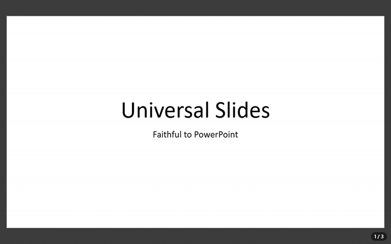

<universal-slides>
The <universal-slides> web component — a .pptx editor built on the same rendering as <universal-slides-viewer>: slides faithful to Microsoft PowerPoint, transitions, animations, the slide show and automatic playback, plus editing — and, if you want it, a complete PowerPoint-like interface out of the box.
Package @universal-office/slides

- Everything the viewer does (it extends
UniversalSlidesViewerElement): same methods and events, slide show, playback, thumbnails, notes - Editing that goes to the file: text in place (double-click), slides (new from a layout, duplicate, delete, reorder, hide, layout, background, transition), shapes (text box, preset shapes, pictures; move, resize, fill, outline, order, delete, copy/paste, link), text formatting, speaker notes, document properties, "Set Up Slide Show", undo/redo
- Optional built-in interface (
topbar,bottombar): a compact bar like Google Slides (title above the menus) or a ribbon like PowerPoint (toolbar="ribbon"), the slide thumbnails pane, the notes pane, Slide Sorter and Reading views, the status bar, PowerPoint's keyboard shortcuts, English/Portuguese/Spanish (lang) and light/dark (color-scheme,theme) - Fonts in the file: embed the used fonts when saving, like PowerPoint's "Embed fonts in the file"
- Opens .pptx and .ppt; saves .pptx; exports PDF, HTML, Markdown and PNG
Just want to edit presentations? The same editor is Universal Slides (Beta) in the ready-to-run desktop app Universal Office (Beta) — Write, Sheet and Slides in one install — for Windows, macOS and Linux: download it from the releases page.
Installation
npm install @universal-office/slidesAll the code is inside the package; its only dependency is @universal-office/font-files (pinned to an exact version), the open fonts. Serve chunks/ next to index.js (the interface, the exporters and other rarely used parts load on demand from there) and the font-files package folder, and point the fonts attribute at it, as for the viewer.
import '@universal-office/slides';A complete editor in one tag — bars, thumbnails, notes and status bar:
<universal-slides id="deck" topbar bottombar storage-key="my-app"
fonts="/node_modules/@universal-office/font-files" style="display:block; height:100vh"></universal-slides>const deck = document.getElementById('deck');
deck.openPresentation(new Uint8Array(await (await fetch('/pitch.pptx')).arrayBuffer()), { name: 'pitch.pptx' });Or only the slide area, inside your own UI (no attribute = no bar, exactly as before):
deck.loadPptx(bytes);
deck.addSlide(); // after the current one, from its layout
deck.selectShape(0);
deck.formatText({ bold: true, size: 32 });
const pptx = await deck.savePptx();Built-in interface
| Attribute | Description |
|---|---|
topbar | The top bar (menus and tools), the thumbnails pane on the left and the editable notes pane under the slide. Also turns on the editing surface: click to select a shape, drag to move, handles to resize (Shift keeps the proportions), double-click/F2/Enter to edit the text, the keyboard shortcuts, drag and drop and the clipboard. |
bottombar | Status bar: "Slide n of N" (click to go to a slide), notes, the views (Normal, Slide Sorter, Reading, Slide Show) and zoom. |
toolbar="compact|ribbon" | Compact bar (default: like Google Slides — the title above the menus, a tool row that collapses by priority) or ribbon (like PowerPoint — tabs and groups, with the contextual Shape Format tab while a shape is selected). The View menu switches too, saved per instance. |
lang | Interface language (en, pt, es; any region: es-MX, es-419… → Spanish; default: the browser's). |
theme="auto|light|dark" | Forces light/dark; without it the bars follow the CSS color-scheme of the page (light dark = the system's). View › Theme chooses too. |
hidden-commands | Ids hidden in the bars, menus and shortcuts — commands (new, open, print, textbox…), menus (file, slideshow…), groups (slides, shape…) and tabs (transitions…). Comma or space separated; also the hiddenCommands property. |
storage-key | Saves the interface choices (compact/ribbon, theme, panes) in localStorage under this key (or the id); without it they last for the page. |
What the bars offer (menus of the compact bar; the ribbon has the same in PowerPoint's tabs — File, Home, Insert, Design, Transitions, Animations, Slide Show, View, Shape Format):
- File — New, Open, Save, Save as, Download (PDF, web page, Markdown, current slide as PNG), Fonts in file, Print (one slide per page, painted by the same engine as the screen), Properties.
- Edit — Undo, Redo, Cut, Copy, Paste (shapes, also between editors and as text to other apps; pasted images and text become a picture/text box), Delete, Find, Replace.
- View — Normal, Slide Sorter, Reading View, Thumbnails, Notes, Status bar, Zoom (fit, 25–300 %, Ctrl+wheel), Theme, Toolbar (compact/ribbon).
- Insert — New slide (with a layout), Duplicate slide, Text box, Image, Shapes (28 Office presets), Link.
- Format — Bold, Italic, Underline, Strikethrough, Font, Size, Increase/Decrease font size, Font color, Align (left, center, right, justify), Bullets, Numbering, Clear formatting, Shape fill, Shape outline, Arrange (bring to front, forward, backward, send to back), Size and position.
- Slide — New, Duplicate, Delete, Hide, Move up/down, Layout, Background (color, reset, apply to all), Transition.
- Slide Show — From beginning (F5), From current slide (Shift+F5), Play automatically (uses the timings), Set up slide show (kiosk, loop, with or without animations, use timings — saved in the file), Hide slide, Preview animations, Animation pane.
- Transitions (ribbon tab / Slide › Transition) — 21 effects (Fade, Push, Wipe, Split, Cover, Uncover, Random Bars, Circle, Diamond, Plus, Wedge, Wheel, Zoom, Dissolve, Newsflash, Blinds, Checkerboard, Strips, Comb, Cut, None), effect options (direction), speed, advance on click / after N seconds, Apply to all, Preview.
- Animations — Preview and a read-only Animation pane: the animations of the file play exactly as in the slide show, but adding or editing animations is not available yet.
- Help — Keyboard shortcuts, About.
The thumbnails pane selects with a click, reorders by dragging, and has the slide context menu (new, duplicate, delete, hide, layout, background, transition, move); in it Delete removes the slide and Enter adds one. The notes pane edits the speaker notes of the current slide: what you type goes to the file (setSlideNotes) shortly after you stop typing or when you leave the pane.
Keyboard shortcuts (PowerPoint's): F5 / Shift+F5 present, Ctrl+M new slide, Ctrl+D duplicate (the selected shape, or the slide), Ctrl+Z / Ctrl+Y, Ctrl+X / C / V, Delete, F2 / Enter edit the text, Escape deselect, Tab next shape, arrows nudge (Ctrl: 1 pt) or change slides, Ctrl+B / I / U, Ctrl+] / Ctrl+[, Ctrl+L / E / R / J, Ctrl+Space clear formatting, Ctrl+K link, Ctrl+F / Ctrl+H, Ctrl+O / S / Shift+S / P, Ctrl+= / Ctrl+-. While editing text in place (with the bars), Enter starts a new paragraph and Escape leaves the box keeping the text.
Customizing the bars
Hide what your app does not need with hidden-commands. Extend them with plugins — the same model as <universal-write>: toolbar returns commands and where they go in the compact bar and in the ribbon.
import { UniversalSlidesElement } from '@universal-office/slides';
const share = {
id: 'acme.share',
toolbar: ({ editor, ui }) => ({
commands: [{ id: 'acme:share', label: { en: 'Share', pt: 'Compartilhar' }, icon: 'send', run: () => shareDeck(editor) }],
compact: {
menus: [{ id: 'acme', label: 'Acme', items: ['acme:share'], before: 'help' }],
trailing: [{ id: 'acme:share-btn', widget: () => ({ el: ui.createBarButton({ icon: 'send', label: { en: 'Share', pt: 'Compartilhar' }, variant: 'tonal', onClick: () => shareDeck(editor) }) }) }],
},
ribbon: { groups: [{ tab: 'home', id: 'acme', label: 'Acme', cells: [{ cmd: 'acme:share', size: 'large' }] }] },
}),
};
UniversalSlidesElement.register(share); // every instance; or deck.use(share)A contribution can also replace the title (compact.title / ribbon.title) and the logo (compact.leading). setNotice(el, { tone }) shows a notice band between the title/menus and the tools. loadBarKit(lang) gives the bar's buttons, icons and CSS to build matching UI outside the editor. Labels take a string or { en, pt, es }; es is optional, and without it the Spanish UI shows the English text.
The look follows the Material 3 tokens of @universal-material when the page defines them (--u-color-*); otherwise the component uses its own palette. CSS custom properties: --us-background (the single background of bars, panes and desk), --us-desk (around the slide), --us-font, --us-thumbnails-width, --us-notes-height, --us-sorter-size, and the --uo-* of the bars. Parts: topbar, bottombar, thumbnails, sorter, notes, statusbar, and the bars' toolbar, titlebar, menubar, toolrow, tabs, ribbon, menu, dialog.
Integration with the host app
appHost (optional) is what only the host can do — native file dialogs, printing, the window. Without it the bars use the web path (File System Access with download as fallback, the browser's print dialog, beforeunload).
deck.appHost = {
openFile: () => bridge.open(), // { name, bytes, path? } | null
saveFile: (bytes, { name, saveAs, path }) => bridge.save(bytes, name, path), // name or { name, path } | null
exportFile: (kind, name, data) => bridge.export(kind, name, data), // kind: pdf | html | md | png
print: ({ pages, title, landscape }) => bridge.print(pages), // pages: PNG data URLs, one per slide
setDirty: (dirty, name) => bridge.setDirty(dirty, name),
onSaveBeforeClose: (cb) => bridge.onSaveBeforeClose(cb),
closeWindow: () => bridge.close(),
setTitleTheme: (dark) => bridge.setTitleTheme(dark),
setTitle: (title) => { document.title = title; },
windowControlsOverlay: true, // frameless window: the title row reserves the OS controls and drags the window
};API
All attributes, methods and events of <universal-slides-viewer> apply, except the control-bar ones (nocontrols, no<item>, the --upv-controls-* properties and the bar's parts). Every edit is one undo step and goes to the package — only the edited part of each XML part changes; the rest of the file stays byte for byte. Shape indexes are positions in the current slide's shapes; i defaults to the selected shape (or the one being edited).
| Member | Description |
|---|---|
openPresentation(bytes, { name?, path? }) | Opens like File › Open: loads, sets the name (title) and the host path. |
newPresentation({ aspect? }) | A blank presentation (16:9 or 4:3) with the Office theme, six layouts and a notes master. |
documentName | Name shown in the title and suggested when saving. |
savePptx(): Promise<Uint8Array> | Saves the presentation with the font-embedding setting applied. |
isDirty() · markClean() · undo() · redo() · canUndo() · canRedo() | Unsaved changes and undo/redo. |
getFontEmbedding() · setFontEmbedding({ embed, subset, skipCommonFonts }) | Fonts in the file. Default: off; when on, only the used characters, and never the common fonts PowerPoint skips (Arial, Times New Roman, Courier New, Calibri, Aptos). |
getLayouts() · getSlideLayout(i) · setSlideLayout(path, i) | Layouts of the masters ({ path, name, type, master }). |
addSlide(layout?) · duplicateSlide(i) · deleteSlide(i) · moveSlide(from, to) | Slides. A new slide gets the layout's placeholders, empty (with the "Click to add…" prompts on screen only). |
isSlideHidden(i) · setSlideHidden(hidden, i) · getSlideBackgroundColor(i) · setSlideBackground(color | null, i | 'all') | Hide slide, solid background. |
getSlideTransition(i) · setSlideTransition(spec | null, i | 'all') | { type, dir?, speed?, advanceOnClick?, advanceAfterMs? } (TRANSITION_TYPES). |
getShowSettings() · setShowSettings({ loop, useTimings, showAnimation, kiosk }) | "Set Up Slide Show", saved in the file. |
previewSlide('transition' | 'animations') | Plays the current slide's transition or animations in place. |
getSlideAnimations(i) | The slide's animations (read-only): step, trigger, effect, target shape, duration. |
getSelectedShape() · selectShape(i | null) · getShapeInfo(i) | Selection and what a shape is (kind, frame, text, movable). |
beginEditShape(i) · commitEditShape() · cancelEditShape() · getEditingShape() | Text editing in place. Unchanged paragraphs keep their runs; an edited paragraph keeps its paragraph properties and the formatting of its first run. |
setShapeText(text, i) | Replaces the shape's text (one paragraph per line). |
getTextFormat(i) · formatText({ bold, italic, underline, strike, size, font, color }, i) · toggleTextFormat(k, i) · growFont(±1, i) | Character formatting of the shape's whole text. |
alignText('l' | 'ctr' | 'r' | 'just', i) · setBullets('bullet' | 'number' | 'none', i) · clearFormatting(i) · setLink(url | null, i) · getLink(i) | Paragraphs, bullets, link. |
insertTextBox(text?, frame?) · insertShape(prst, frame?) · insertImage(bytes, mime, frame?) | New shapes (EMU frames; centered by default); returns the index, selected. |
setShapeFrame(frame, i) · setShapeFill(color | null, i) · setShapeOutline(color | null, i) · arrangeShape('front' | 'back' | 'forward' | 'backward', i) · deleteShape(i) | Shape geometry and look (deleting also removes its animations). |
copyShape(i) · pasteShape(clip) · duplicateShape(i) | Shape clipboard (pictures carry their bytes, so a clip pastes into another editor too). |
canEditNotes(i) · setSlideNotes(text, i) | Speaker notes (creates the notes page when the deck has a notes master). |
getProperties() · setProperties({ title, subject, author, keywords, description }) | Document properties. |
findText(query, { matchCase }) · replaceText(query, replacement, { matchCase, hit }) | Find and replace in the shapes' text (within runs of the same formatting). |
getZoom() · setZoom(z | 'fit') · isZoomFit() | Zoom (1 = 100 %). |
use(plugin) · unuse(id) · UniversalSlidesElement.register(plugin) | Plugins. |
setNotice(el, { tone }) · appHost · hiddenCommands · effectiveTheme | Bars: notice band, host integration, hidden ids, light/dark. |
| Event | detail | When |
|---|---|---|
us-change | { kind, index } | After every edit (and undo/redo). |
us-selection | { index, shape } | The selected shape changed. |
us-dirty | { dirty } | The unsaved-changes state changed. |
us-title-change | { name } | documentName changed. |
us-zoom | { zoom, fit } | The zoom changed. |
us-theme-change | { theme } | The effective light/dark changed. |
us-file-drop | { files } | Files dropped on the editor (with topbar); cancel it to handle them yourself. |
us-shape-edit | { slide, shapeIdx, text } | A text edit was committed. |
us-font-embedding | { embedded, skipped: { family, reason }[] } | After savePptx(); reason is 'common', 'license' or 'unavailable'. |
Current limitations
- Text is edited per shape, as plain text: character formatting applies to the whole text of the shape (no formatting of a selection inside the box); an edited paragraph keeps the formatting of its first run.
- Shapes inside groups can have their text edited and formatted, but not be moved, resized, copied or reordered; SmartArt and layout/master decorations are not selectable. Tables and charts can be moved, not edited.
- Not available yet: adding or editing animations (they play and preview), tables, charts, SmartArt, video/audio insertion, rotation, grouping, aligning objects, line/character spacing, highlight, slide size, headers and footers, comments, rehearse timings, presenter view, custom shows, the Notes Page view, rulers and guides, transition durations other than fast/medium/slow (the p14 duration) and the newer transitions (Morph…), which play but cannot be chosen.
- The PDF export is a simplified vector PDF (office-converter, set in the open Liberation Sans; charts as placeholders, no shadows); Print paints the slides exactly as on screen (use "Save as PDF" in the print dialog for a faithful PDF).
License
MIT. The fonts (@universal-office/font-files) are under the SIL OFL 1.1 and the Apache License 2.0.